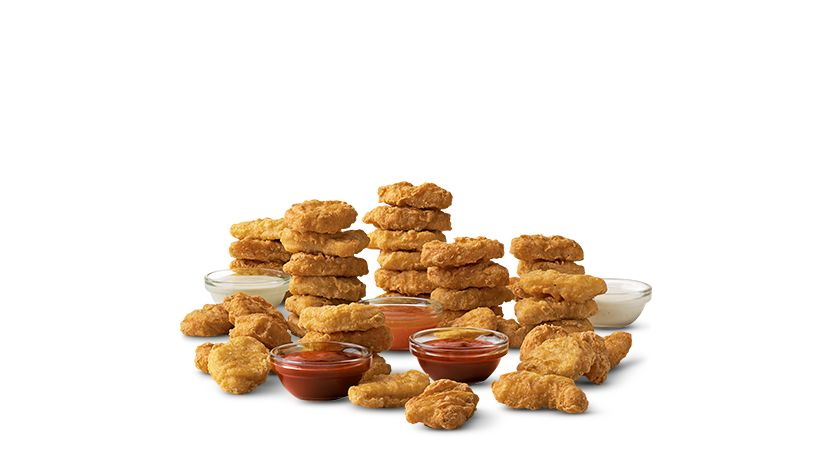
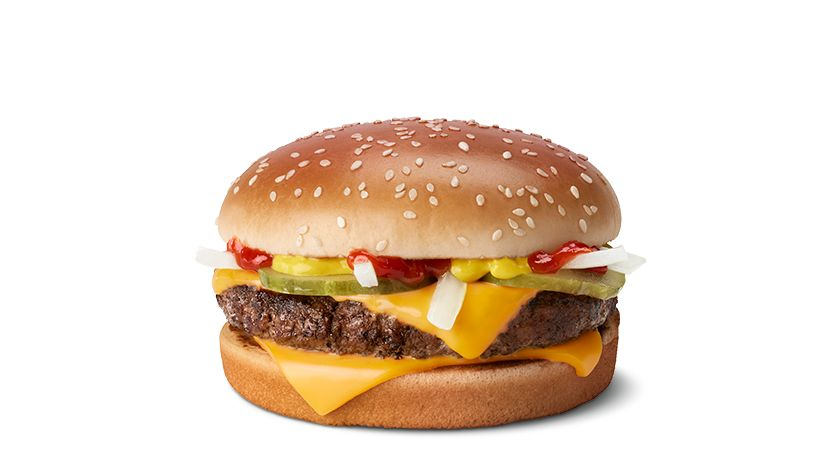
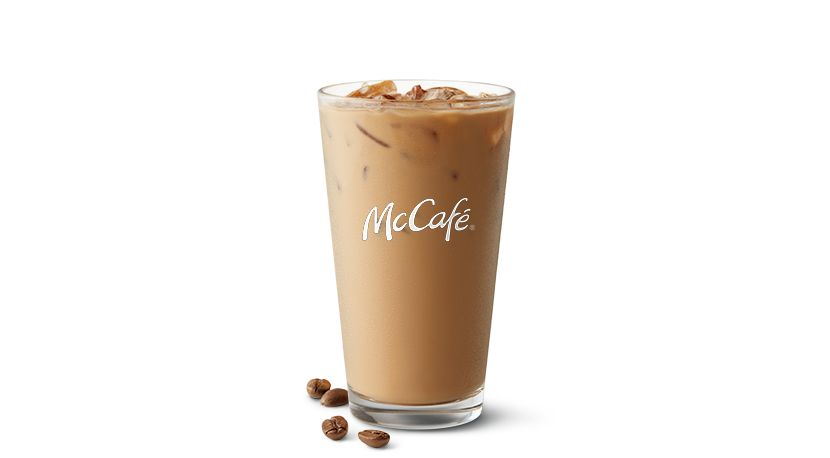
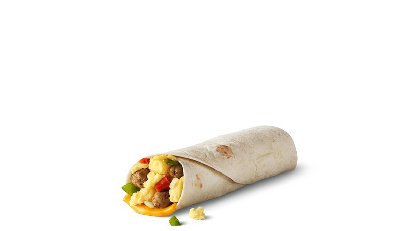

Spicy McCrispy™

Spicy Pepper Sauce topping the southern style fried chicken fillet on a toasted potato roll, crispy, juicy, tender and hot.
Ingredients:
- 4 boneless, skinless chicken breasts
- 1 cup buttermilk
- 1 cup all-purpose flour
- 1 teaspoon paprika
- 1 teaspoon garlic powder
- 1 teaspoon cayenne pepper
- Salt and pepper to taste
- Vegetable oil for frying
Instructions:
1. Marinate chicken breasts in buttermilk for at least 1 hour.
2. In a bowl, combine flour, paprika, garlic powder, cayenne pepper, salt, and pepper.
3. Dredge marinated chicken in the flour mixture, ensuring even coating.
4. Heat vegetable oil in a pan and fry chicken until golden brown and cooked through.
5. Drain on paper towels and serve hot.
Big Mac®

A 100% beef burger with a taste like no other.
Ingredients:
- 2 beef patties
- Special sauce
- Shredded lettuce
- Sliced American cheese
- Pickles
- Chopped onions
- Sesame seed bun
Instructions:
1. Cook the beef patties until fully cooked.
2. Toast the sesame seed bun.
3. Assemble the burger by placing special sauce on the bottom bun, followed by lettuce, a beef patty, cheese, pickles, onions, another beef patty, and the top bun.
4. Serve and enjoy your delicious Big Mac!
Chicken McNuggets®
Made with all white meat chicken and no artificial colors, flavors, or preservatives.
Ingredients:
- Chicken breast, cut into bite-sized pieces
- Flour
- Egg wash (beaten eggs)
- Breadcrumbs
- Salt and pepper to taste
Instructions:
1. Preheat the oven to 375°F (190°C).
2. Season the chicken pieces with salt and pepper.
3. Dredge each chicken piece in flour, then dip in egg wash, and coat with breadcrumbs.
4. Place the coated chicken pieces on a baking sheet.
5. Bake in the preheated oven for 15-20 minutes or until golden brown and cooked through.
6. Serve hot with your favorite dipping sauce and enjoy the deliciousness of Chicken McNuggets!
Quarter Pounder with Cheese
A ¼ lb of 100% fresh beef that’s hot, deliciously juicy.
Ingredients:
- 1/4 lb ground beef patty
- Slice of cheddar cheese
- Fresh lettuce leaves
- Sliced tomatoes
- Pickle slices
- Chopped onions
- Ketchup
- Mustard
- Sesame seed bun
Instructions:
1. Grill the beef patty to perfection.
2. Add a slice of cheddar cheese on top of the patty and let it melt.
3. Toast the sesame seed bun.
4. Assemble the burger with lettuce, tomatoes, pickles, onions, ketchup, and mustard.
5. Place the cheesy beef patty on the bottom half of the bun and cover with the top half.
6. Indulge in the savory goodness of the Quarter Pounder with Cheese!
Iced Coffee
Made with 100% Arabica beans, cream, and your choice of flavored coffee syrup—Caramel, Hazelnut, French Vanilla, and Sugar-Free French Vanilla.
Ingredients:
- Freshly brewed coffee
- Ice cubes
- Sweetener (optional)
- Cream or milk (optional)
Instructions:
1. Brew a fresh pot of coffee and let it cool to room temperature.
2. Fill a glass with ice cubes.
3. Pour the cooled coffee over the ice cubes.
4. Add sweetener to taste (if desired).
5. Optionally, add cream or milk for a creamy texture.
6. Stir well and enjoy the invigorating taste of our Iced Coffee!
Egg McMuffin®

Breakfast cravings with freshly cracked Grade A egg placed on a toasted English Muffin.
Ingredients:
- English muffins, split and toasted
- Large eggs
- Canadian bacon slices
- American cheese slices
- Butter
- Salt and pepper to taste
Instructions:
1. Heat a non-stick skillet over medium heat and melt a bit of butter.
2. Crack an egg into the skillet and cook until the whites are set but the yolk is still runny. Season with salt and pepper.
3. While the egg is cooking, toast the English muffin halves.
4. Place a slice of Canadian bacon on the bottom half of each English muffin.
5. Once the egg is cooked, place it on top of the Canadian bacon.
6. Add a slice of American cheese on top of the egg.
7. Top with the other half of the English muffin, and your Egg McMuffin is ready to enjoy!
Sausage Burrito
It's wrapped in a soft tortilla, making it the perfect grab and go breakfast.
Ingredients:
- Sausage links, cooked and sliced
- Scrambled eggs
- Shredded cheese
- Salsa
- Flour tortillas
Instructions:
1. Cook and slice the sausage links.
2. Scramble the eggs in a pan until cooked through.
3. Warm the flour tortillas in a microwave or on a skillet.
4. Assemble the burrito by placing scrambled eggs, sausage slices, shredded cheese, and salsa in the center of each tortilla.
5. Fold the sides of the tortilla inward and then roll it up tightly.
6. Serve warm and savor the deliciousness of our Sausage Burrito!